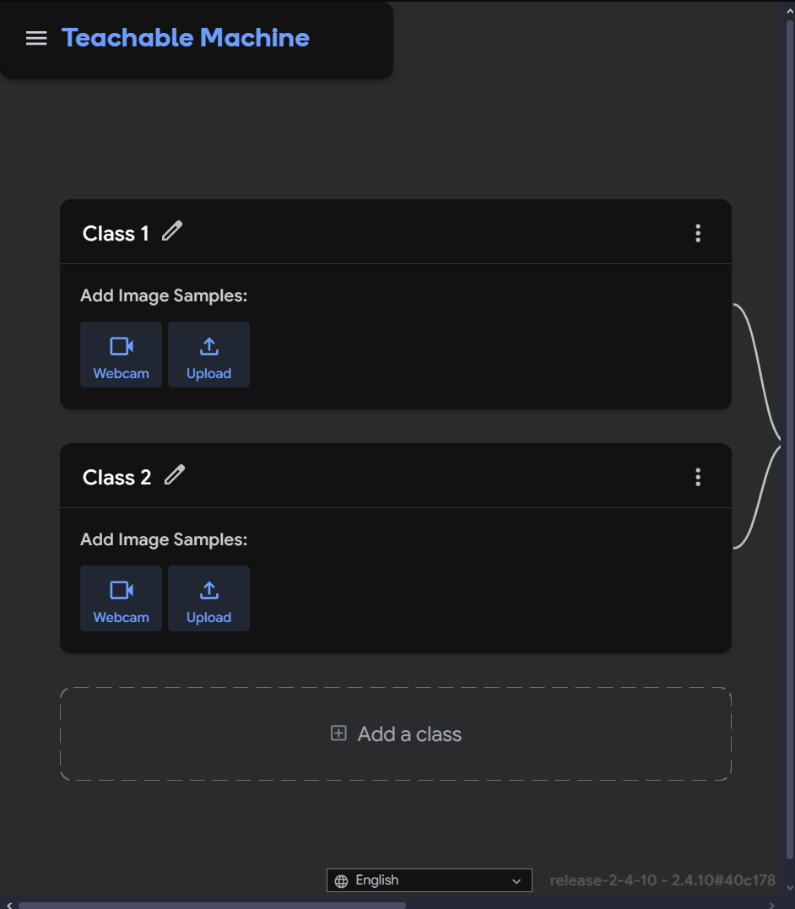

The goal was to create a web application that could identify famous football players based on their characteristic poses. This involves using a machine learning model trained to recognize these specific poses.
Google's Teachable Machine is a web-based tool that makes it easy to create machine learning models without writing any code. For this project, the "Pose Project" type was selected.
Classes were created for each football player we wanted to recognize (e.g., Messi, Ronaldo, Neymar, Mbappé). For each player, multiple image samples of them in various iconic poses were gathered. Teachable Machine allows uploading images or capturing them live with a webcam. The more varied and clear the samples, the better the model performs.
Once the samples were uploaded for each class, the model was trained directly within the Teachable Machine interface. This process involves the platform analyzing the poses and learning to differentiate between them. Teachable Machine provides options to tweak training parameters, but the defaults are often sufficient for good results.
After training and testing the model in the Teachable Machine preview, it was exported for use in a web application. The platform provides a shareable link to the trained model (Tensorflow.js format), which includes the model files and metadata.
The main page (model_test.html) was built using HTML for structure and Tailwind CSS for styling. JavaScript, along with the Teachable Machine Pose library (@teachablemachine/pose) and TensorFlow.js (@tensorflow/tfjs), was used to:
The UI was designed to be intuitive, with a clear "Start Detection" button. After analysis, the interface dynamically updates to show the detected player's name, a video of them, a brief description, and a link to their Wikipedia page. Tailwind CSS was used extensively to create a modern, responsive design, including the navigation bar, main content card, and footer.
This project demonstrates how Teachable Machine can rapidly prototype and build functional machine learning applications for the web with minimal coding for the ML part itself.